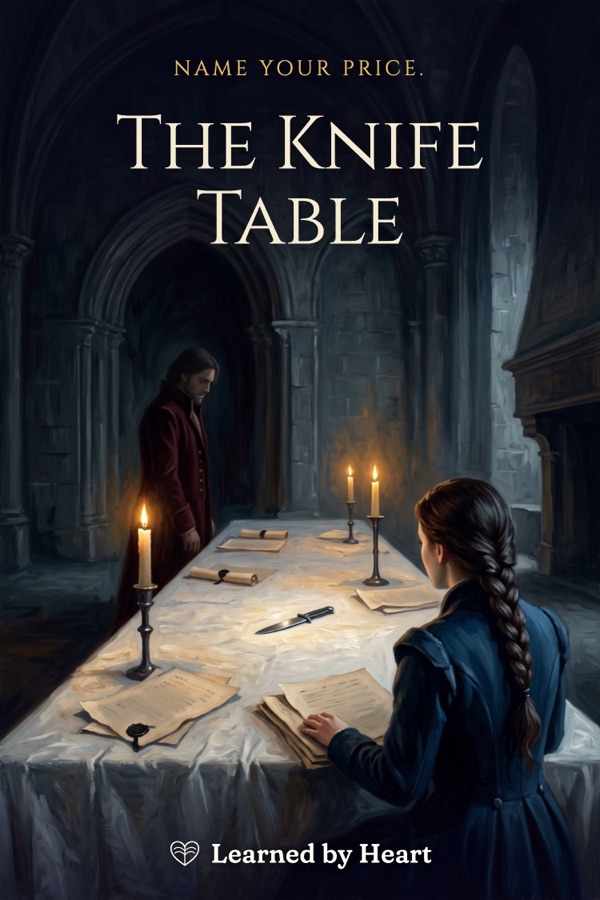
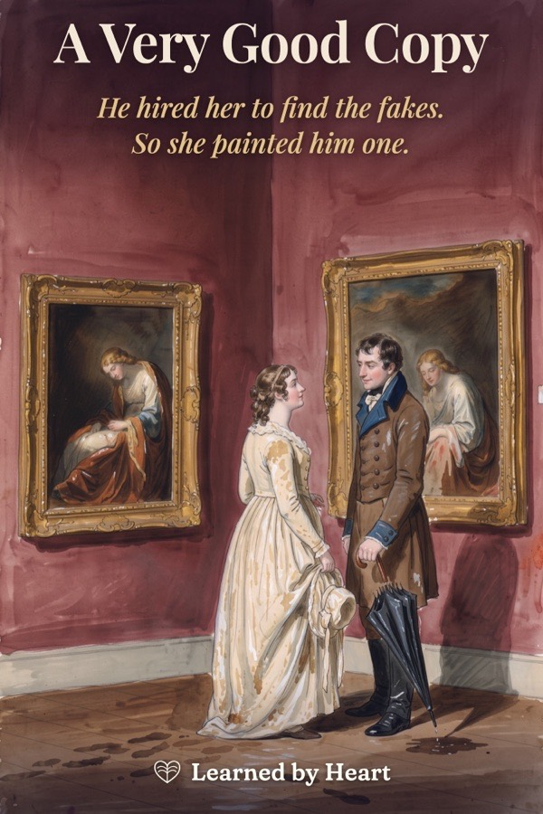

Learned by Heart › Library › Novels that teach life skills
Novels that teach life skills
Warm, funny and gripping novels that teach practical things: cooking, fitness, negotiation, buying a home, the skills everyone means to learn one day. Subjects here: beginner Italian, dog behaviour and training, how music works and how to listen, how the law works for ordinary people, how to cook, how to look at a painting, negotiation, wine. Chapter one of every book is free.

The Knife TableA romantasy for readers of Sarah J. Maas and Rebecca Yarrosteaches negotiationHer father was executed for writing a treaty. Now she must write the next. HacklesA small-town horror for readers of Stephen Kingteaches dog behaviour and trainingThey said let sleeping dogs lie. The town had other ideas.
HacklesA small-town horror for readers of Stephen Kingteaches dog behaviour and trainingThey said let sleeping dogs lie. The town had other ideas. The Year of the Late HarvestA vineyard family saga for readers of Liane Moriartyteaches wineBlood is thicker than wine.
The Year of the Late HarvestA vineyard family saga for readers of Liane Moriartyteaches wineBlood is thicker than wine. Piano, PianoA summer romance for readers of Beth O’Leary and Jenny Colganteaches beginner ItalianLost in translation. Found in Italy.
Piano, PianoA summer romance for readers of Beth O’Leary and Jenny Colganteaches beginner ItalianLost in translation. Found in Italy.
A Very Good CopyA Regency romance for readers of Julia Quinn and Tessa Dareteaches how to look at a paintingHe hired her to find the fakes. So she painted him one. Initial HereA legal thriller for readers of John Grishamteaches how the law works for ordinary peopleThe fine print is never fine.
Initial HereA legal thriller for readers of John Grishamteaches how the law works for ordinary peopleThe fine print is never fine. The Wharf KitchenA small-town romance for readers of Sarah Morgan and Jenny Colganteaches how to cookIf you can't stand the heat, come home.
The Wharf KitchenA small-town romance for readers of Sarah Morgan and Jenny Colganteaches how to cookIf you can't stand the heat, come home. Re: Your PianoA novel in letters for readers of 84 Charing Cross Road and The Guernsey Literary and Potato Peel Pie Societyteaches how music works and how to listenA lullaby is keeping the whole house awake.
Re: Your PianoA novel in letters for readers of 84 Charing Cross Road and The Guernsey Literary and Potato Peel Pie Societyteaches how music works and how to listenA lullaby is keeping the whole house awake.
Want one written just for you?
Tell us what you love reading and what you've always meant to understand, and we'll write a novel for you, or for someone you love. Chapter one arrives within 24 hours.
Start your story